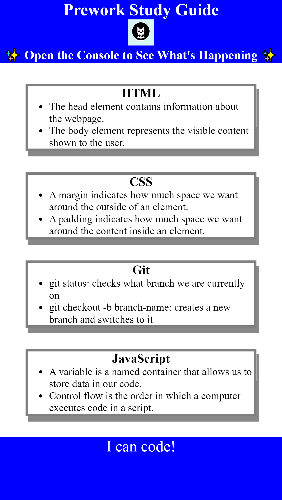

Hey there, I'm Adam Jacob Rosenberg, a budding software developer ready to make my mark in the tech world. When I'm not knee-deep in code, you'll often find me gaming on my trusty PC or enjoying a slice of my favorite comfort food, pizza. My loyal canine companion, Laila, is always by my side, keeping me company during late-night coding sessions. As a die-hard Lakers fan, I bleed purple and gold, representing my hometown of Los Angeles with pride. Growing up in the heart of LA has instilled in me a deep appreciation for innovation and technology. Now, I'm excited to leverage my skills and passion to create impactful software solutions that make a difference.
Work:
Horiseon-Refractory-Code
Prework-study-guide

UCI-Bootcamp-Project-1
Contact Me:
Check out my profile on Github!
Resume:
Check out my profile on Linkedin!